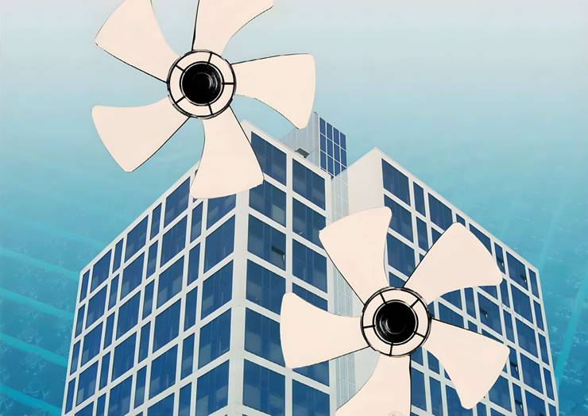
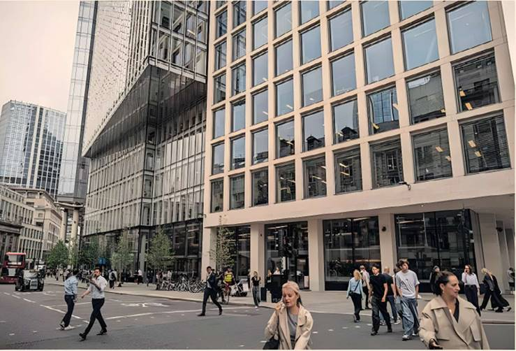

The focus is now on boosting natural air and reducing
pathogens
using energy-efficient methods, writes Alice Ross
If there is a silver lining to a summer heatwave, it is seized on by the back-to-the-office contingent: white-collar workers can escape the heat thanks to air conditioning.
But aircon sits awkwardly with global warming, net zero targets and energy efficiency goals. It is also a perennial office irritant: those sitting under a vent have to wrap up warm, views often differ on the ideal temperature and there is greater awareness of germs floating through recycled air in a post-pandemic environment. With temperatures rising, the International Energy Agency has warned that aircon is set to be a huge driver for electricity demand.
Enter the offices of the future. In the City of London, proposed developments at 50 Fenchurch Street and 63 St Mary Axe, and the recently built 8 Bishopsgate, will use energy efficient underfloor cooling systems that raise oxygen levels and reduce pathogens, while also employing radical new ideas such as opening the windows.
At 63 St Mary’s Axe, which was approved this month by the City of London Corporation, an underfloor "displacement" system will pump in large volumes of cool air through the floor, which will rise as it warms. At night, windows at the top of the building will open automatically to let the hot air escape. A similar method will be used at 50 Fenchurch Street, which Andrew MacKay, associate director at the building's designer, Arup, says will bring about 30 per cent more outside air into the building. That will lead to higher oxygen levels, which studies say increase cognitive ability - and worker productivity.
MacKay predicts that within five years most new buildings will have this system, which he notes is also easier on the eye. "When you walk into the spaces you don't see cooling systems on the ceiling, pipes or ducts. It's a visually cleaner space."
A lot of the interest in improvements came during the pandemic when people started to think about the air around them, says Ed Williams, managing partner at Fletcher Priest Architects, who is working on the 63 St Mary Axe building. "The perception of being able to control your environment more is a huge benefit that's hard to measure".
Most buildings will not allow workers to open the windows themselves—a sure-fire way to create tension among colleagues over temperature and draughts. But more are using smart systems to boost the amount of natural air. The headquarters of Australian tech giant Atlassian in Sydney will use temperature and wind sensors to determine when to open and shut the windows, for example. The tower at 8 Bishopsgate will rely on a rooftop sensor to automatically lower blinds when the sun is stronger, reducing the need for artificial cooling.
Green spaces can also improve air quality. At 63 St Mary Axe, every floor will have garden access. "That's a fundamental shift you wouldn't have seen 10 years ago," says Robert Samuel at Axa IM Alts, the developer of the building.
Williams notes that his team creates taller office spaces now—helped by the lack of aircon units in the ceilings—to get more daylight into floors and help with air circulation. "From a designer's point of view, Covid has been a big benefit as you have to work harder to create spaces that people want to leave their homes for," he says.
Kriston Symons, an engineer in Arup's Sydney office, says they used to have a lot of complaints about air conditioning but those have plummeted over the past decade. One reason is that people who have been working from home are more likely to be grateful for the office aircon. Another is the trend towards hot desking and agile working—people are better able to move around the office to seek out the right temperature for them.
At 80 Charlotte Street, Arup's London headquarters, workers can choose where to sit based on air quality. "We're a tech company and we're all nerds, so we have air quality monitoring all around the building, in terms of CO2 levels, pollutant levels, temperature and humidity so you can move around and sit where you're most comfortable," says MacKay.
Other advances in technology have made less abrasive cooling systems possible, MacKay adds: because LED lights give off less heat and cloud computing has led to fewer big servers in offices, cooling systems can be lighter touch.
Some developers remain wary of new technology, which is not yet tried and tested. Designers also admit the most radical new cooling methods cannot be realistically applied to existing buildings for cost reasons.
But companies can still improve their workplaces by tweaking existing systems, points out Brian Motherway, head of energy efficiency and inclusive transitions at the International Energy Agency. He says offices could make big savings by just turning up the aircon temperature a couple of degrees and installing electric fans near people's desks.
Electric fans use up to 40 times less electricity than aircon units, he says, while also giving individuals more control. Women tend to feel colder than men and some studies have even suggested their cognitive ability is better at higher temperatures—a further win-win for companies.
Developers are also often not using the most energy efficient aircon models, Motherway says. Governments could play a role here—in Japan it is common for standards on the best aircon units to be reviewed and revised upwards more frequently than in other countries.
Companies should also talk directly to their workers about whether they are happy with the temperature, he adds. The likelihood is that many find it too cold anyway
US dominance in new ideas, emotional intelligence, and following your gut